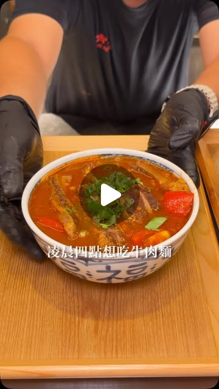

1000cc美食頻道｜宵夜牛肉麵大王大安店：營業到凌晨四點的台北牛肉麵

一句話摘要
《宵夜牛肉麵大王 大安店》是 1000cc 美食頻道推薦的台北深夜牛肉麵選項，營業至凌晨 04:00，適合晚餐後、宵夜或清晨前想吃熱湯麵時收藏。
為什麼保存
這則短影音提供的是實用生活／美食資訊：店名、營業時間、電話、地址與分店位置都明確，且主打深夜營業。未來在大安區、忠孝復興／東區、大安路一帶想找宵夜牛肉麵，可快速查回。
店家資訊
- 店名：宵夜牛肉麵大王 大安店
- 英文名：NIGHT BEEF NOODLES KING DAAN
- 地址：臺北市大安區光武里大安路一段52巷7號
- 營業時間：每天 17:30–04:00
- 電話：0966-890-570
- 分店：安和路也有分店，地址為臺北市大安區義安里安和路二段74巷4號
- 類型：台北牛肉麵、宵夜、深夜食堂、大安區美食
原文重點整理
- 影片文案主打「凌晨四點想吃牛肉麵」也能前往，店員會幫客人煮好端上桌。
- 番茄牛肋麵：湯頭鹹香濃郁，帶有番茄微酸；牛肋軟嫩，搭配刀削麵。
- 半筋半肉牛肉宵魂麵：牛腱心與牛筋份量大，影片推薦可加鴨血作為隱藏吃法。
- 大王金湯清燉牛肉麵：湯頭清香順口，是影片中特別提到的新款品項。
- 小菜也被影片評為亮點。
口袋菜單
| 品項 | 原文備註 |
|---|---|
| 番茄牛肋麵 | 湯頭鹹香濃郁、帶番茄微酸；牛肋軟嫩，適合配刀削麵。 |
| 半筋半肉牛肉宵魂麵 | 牛腱心與牛筋份量大；可嘗試加鴨血。 |
| 大王金湯清燉牛肉麵 | 新品；湯頭清香順口。 |
| 小菜 | 影片字幕提到「小菜也很厲害」。 |
適合情境
- 凌晨或深夜想吃熱湯牛肉麵。
- 在大安區、東區、大安路一帶找宵夜。
- 想吃可搭配刀削麵、番茄湯頭、半筋半肉或清燉金湯的牛肉麵。
實用提醒
短影音資訊可能隨店家營運調整而變動；出發前建議再以 Google Maps、店家社群或電話確認營業時間、分店地址與品項供應。